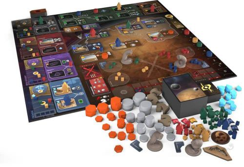
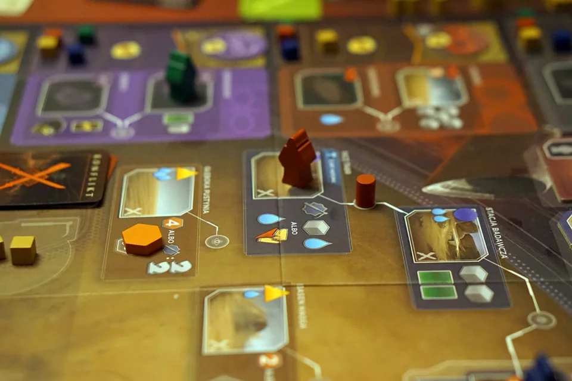
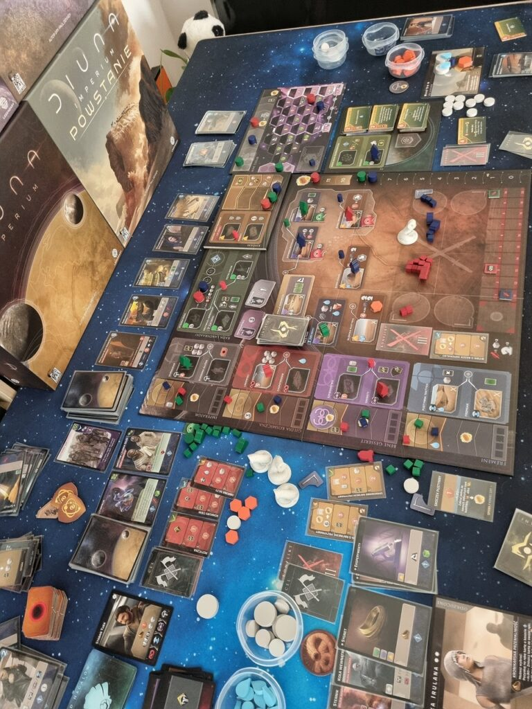

Czym jest Diuna Imperium?
Diuna: Imperium to gra planszowa, która łączy elementy zarządzania kartami z mechaniczną rozstawiania robotników, co sprawia, że rozgrywka jest zarówno strategiczna, jak i dynamiczna. W trakcie gry gracze wykorzystują swoje karty do umieszczania "pracowników" na planszy, co pozwala im zdobywać zasoby, wpływy i realizować różnorodne cele. Tematyka gry jest głęboko osadzona w uniwersum stworzonym przez Franka Herberta, co dodaje jej bogactwa i immersji, przyciągając fanów oryginalnej serii. Dzięki różnorodności dostępnych kart i możliwości podejmowania strategicznych decyzji, każda rozgrywka staje się unikalnym doświadczeniem, które wymaga przemyślanego planowania. Gra nie tylko wciąga w świat Diuny, ale także stawia przed graczami ciekawe wyzwania, zachęcając do rywalizacji i współpracy.
Dlaczego jest ciekawa?
Powodem, dla którego uważam Diunę: Imperium za wyjątkowo interesującą grę, jest niezwykła liczba kombinacji rozgrywki, które wynikają z mechaniki budowania własnej ręki kart. Co więcej, fakt, że wszyscy gracze zaczynają z identycznymi kartami, wprowadza dodatkowy poziom strategii, ponieważ zmusza uczestników do uważnego obserwowania działań innych. Dzięki temu można próbować zapamiętać, jakie karty i strategie wykorzystują przeciwnicy, co znacząco wpływa na podejmowane decyzje i przewidywanie ich ruchów. Ta interaktywność sprawia, że każda rozgrywka jest nieprzewidywalna i zachęca do elastycznego myślenia oraz dostosowywania własnej strategii do zmieniającej się sytuacji na planszy.
Czy polecam początkującym graczom?
Diuna: Imperium to moim zdaniem znakomita gra dla początkujących graczy, oferująca im możliwość nauki strategicznego myślenia w interesującym uniwersum. Jednakże, ze względu na dużą ilość informacji do zapamiętania, może być mniej odpowiednia dla osób, które preferują prostsze, bardziej relaksujące rozgrywki w gronie rodziny. Jeśli gra z rodziną ma być przede wszystkim przyjemnością i sposobem na spędzenie czasu bez zbytniego skupienia na strategii, warto rozważyć inne tytuły, które nie wymagają tak intensywnego śledzenia działań przeciwników.